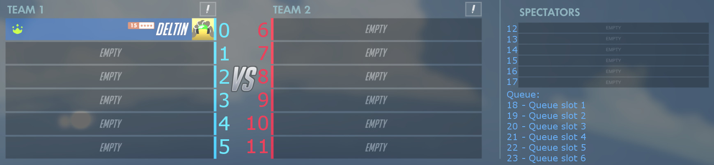

Overwatch Custom Game Automation
Getting Started
Prerequisites
- Overwatch
- .Net Framework 4.7.1 or later.
Usage
Add a reference to Deltin.CustomGameAutomation.
using Deltin.CustomGameAutomation;
Create a CustomGame object. By default, it uses the first Overwatch process it finds.
CustomGame cg = new CustomGame();If you want it to use a specific Overwatch process, you can use the main window handle as an argument.
Process overwatchProcess = ... CustomGame cg = new CustomGame(overwatchProcess.MainWindowHandle);By default the CustomGame class uses BitBlt to capture screenshots of the Overwatch process. Since this method doesn’t work on some systems, you can choose the screenshot method to use.
CustomGame cg = new CustomGame(default(IntPtr), ScreenshotMethod.BitBlt); // or CustomGame cg = new CustomGame(default(IntPtr), ScreenshotMethod.ScreenCopy);
- BitBlt does not require to be on top. You can have other windows over the Overwatch window and it will still work.
- ScreenCopy needs to be on top and have no windows overlapping the Overwatch window. Does not work with all border styles right now.
It is possible to run your application and play Overwatch at the same time by starting 2 Overwatch processes directly from the Overwatch.exe file, which is by default at C:/Program Files (x86)/Overwatch/Overwatch.exe. Create the CustomGame object with the main window handle of the Overwatch process you want the CustomGame class to use. If you are using ScreenCopy, which requires the Overwatch window the CustomGame class is using to be on top, I recommend using a virtual machine.
Slots
You can target a specific player on the server with their slot. CustomGame.BlueSlots;, for the example above, will return a List<int> containing only the number 0.
CustomGame.CG_Interact.Move(0, 8); will move the player Deltin from slot 0 on the blue team to slot 8 on the red team.
CustomGame.CG_PlayerInfo.IsUltimateReady(5); will check if the player in slot 5's ultimate ability is ready.